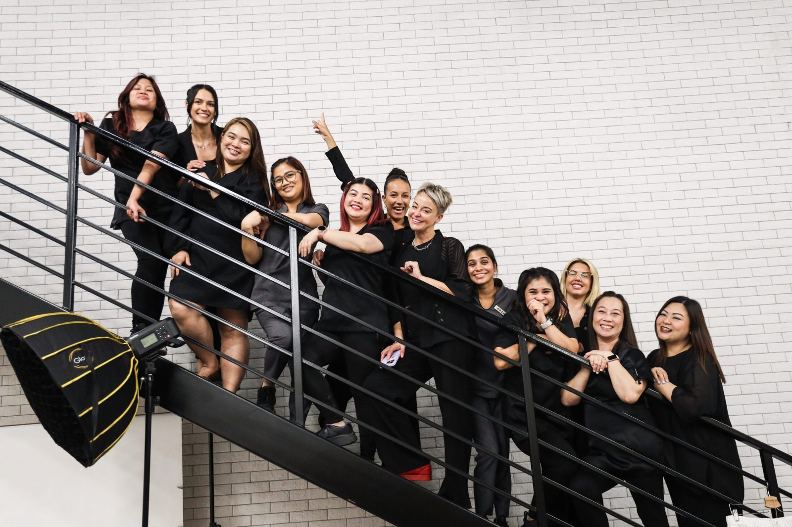
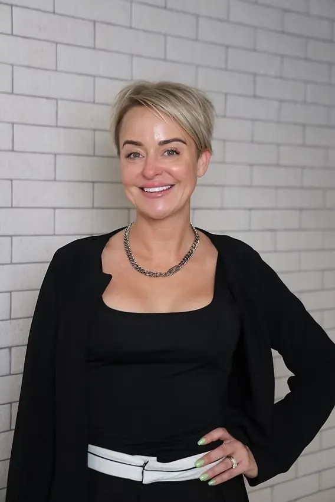
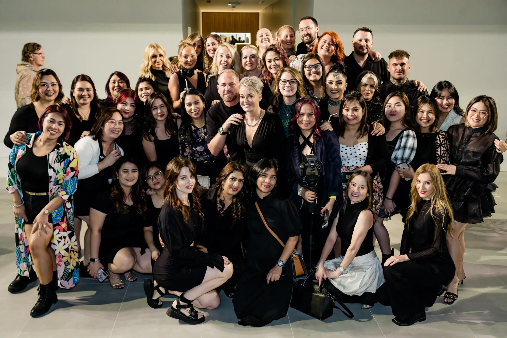
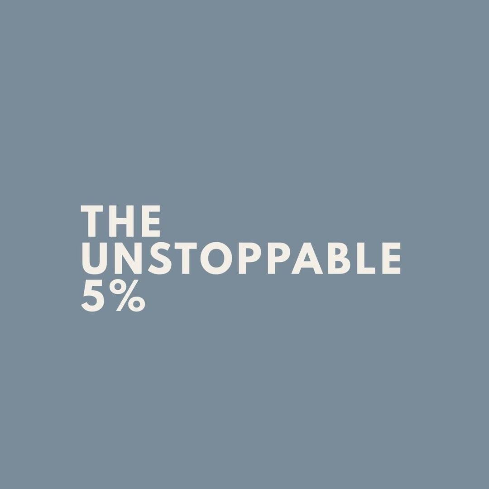
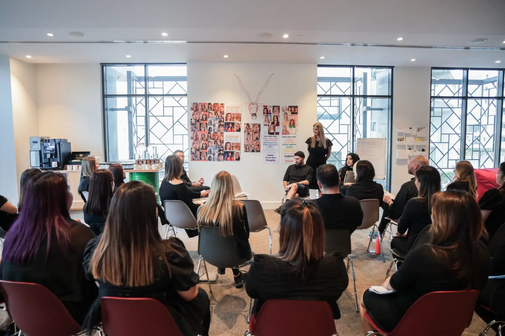
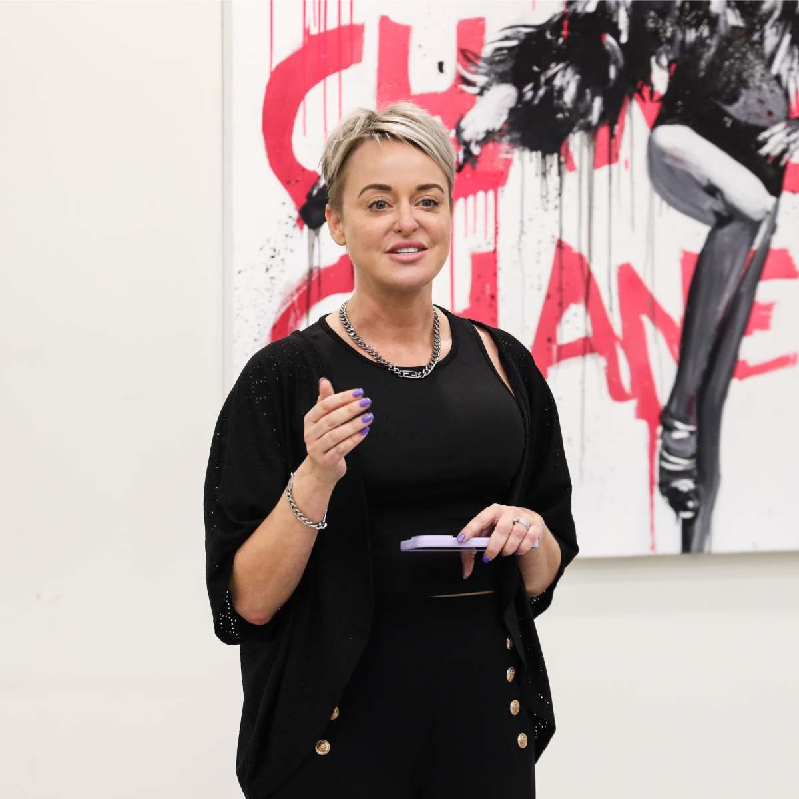

Tara Rose Salons
Hair and beauty salons across the UAE and Bahrain, built around the people who work in them as much as the people who visit.
Visit the salons ↗Hairdresser · Founder · Educator
Hairdresser to CEO.
I started with £200, no grades and, to be fair, no plan. Seventeen years on, I lead salons across the UAE and Bahrain, and an Academy for hair and beauty professionals. It hasn't been tidy. It has been real.

As featured in
“A salon could be a place where a woman walks out feeling genuinely seen, not just groomed.”Tara Rose Kidd · in Bizpreneur Middle East, August 2026
The short version
Six moments, in order. The fifth is the one that taught me the most.
I left school feeling misunderstood. I had a vision and a belief that the beauty industry could be more than surface-level. Not much else.
I moved from Britain to the UAE. A hairdresser with a dream and a lot of imposter syndrome.
I opened the first Tara Rose salon, paid for with a bank loan and a fair amount of nerve.
Named Business Director of the Year at the Professional Beauty Middle East Awards.
I nearly lost everything. I had scaled too fast. It taught me that every level of business asks for a new version of you.
Salons across the UAE and Bahrain. An Academy for the region's hair and beauty professionals. A team I'm still growing, and still learning from.
What I believe
It's more than just hair. It's about building people and creating opportunities for more.
You are not behind because you are different. You are early because you are different.
My journey is the why, and the why is not finished.

The podcast

Over 70 episodes of honest conversations about building something, and staying in it when it gets hard.
What I teach
Eight areas of a life and a business. Give each one a score from 1 to 10, but you are not allowed a 7. People who score a 7 never move. A 6 tells you what to work on. An 8 tells you what to protect. Pick a side.
Is my body able to do the job I am asking it to do?
Body, energy, sleep, movement, burnout, hands-on stamina, the hairdresser's body.
Exhaustion passed off as a busy week. Short temper on the floor. Body aches treated as normal. A team mirroring the owner's energy.
Stamina for a full column. Patience for a difficult client. Creative capacity instead of survival mode.
Am I regulated enough to lead, to be seen, to have the hard conversation?
Regulation, confidence, nervous system, being seen, visibility, emotional safety.
Marketing stalls because nobody can film. Team meetings get postponed. Hard conversations get avoided. Reviews go unanswered.
Visibility. Leadership presence. Being the face of the brand. Having the pricing conversation without the voice shaking.
Do I believe I am worth this number, and can I hold it?
Belief around money, pricing, profit, worth, margin, commission.
Discounting when busy. Undercharging for expertise. Not raising prices. Avoiding the P&L. Paying the team before paying yourself.
Clean pricing conversations. Confident sales without apology. The ability to invest, and to take a holiday.
Do I know what I am building and why it matters?
Purpose, meaning, North Star, inner compass, the why underneath the what.
Drifting. Saying yes to the wrong opportunities. Growing the business but hating it. Collecting clients instead of serving them.
Clear decisions. Faster no's. Values-led hiring. Mission-led marketing.
Is the job I am holding the job I am built to hold?
Work rhythm, role fit, leadership load, decision fatigue, capacity.
Burnout masked as resilience. Managers doing stylists' work. Owners doing managers' work. Everyone in the wrong lane because nobody designed the lanes.
Right people in right seats. Clean handoffs. Clear scope. Energy left at the end of the day.
Is this a skill I have not learned yet, or a belief that says I cannot?
Learning, skill gaps, limiting beliefs, “I have not learned it yet.”
Avoiding the finance book. Avoiding marketing. Using “I'm just creative” as an exit from anything that needs a new skill.
Learning compounds. New skills become fun. The language barrier between creative and commercial disappears.
Who is actually in my corner, and am I letting them be?
Team, peers, belonging, relational support, community, leader loneliness.
Owner on an island. Manager with nowhere to vent. Nobody to call at 9pm when the week goes wrong. Toxic dynamics treated as normal.
Real peers. Real mentors. A leadership team that can hold each other. Clients who feel the culture.
Does the environment I am in match the work I am trying to do?
Physical space, systems, the salon floor, the digital environment, onboarding, the tool stack.
The brand feels inconsistent. The floor feels heavy. New hires take forever to onboard. The team works harder to compensate for the environment.
Clients feel held before anyone speaks. The team works lighter. Standards hold without constant policing.
The job is never the problem. The pillar is.
The work

Hair and beauty salons across the UAE and Bahrain, built around the people who work in them as much as the people who visit.
Visit the salons ↗
Education for hair and beauty professionals across the region. Skills, standards and the confidence to use them.
Ask about the Academy →
On stage and in conversation about building a business without a roadmap, and leading a team through the hard years.
Invite me to speak →In the press
Get in touch
Press, speaking, the Academy: write to me. If it's a haircut you're after, the salon website is far better at that.